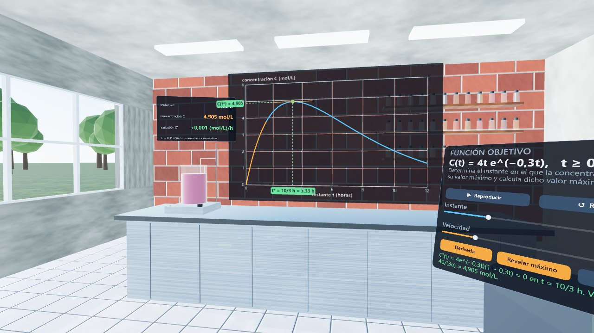

Reacción química
C(t) = 4t e−0,3t, t ≥ 0
Un laboratorio con un reactor cuyo líquido cambia de color según la concentración. Se mueve el instante sobre el gráfico, se ve la derivada y se distingue el instante del valor máximo.
Abrir escena